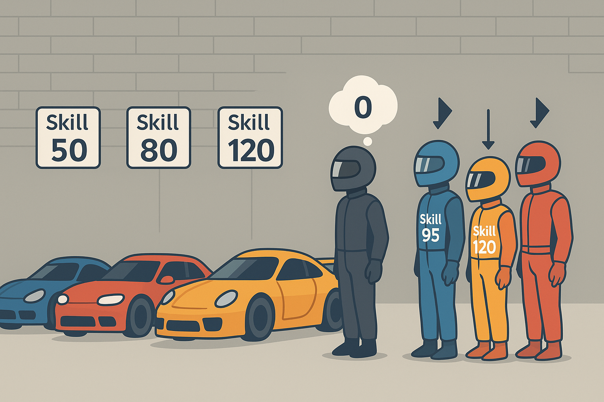

There’s a collection of race cars, and each car requires a minimum skill level to drive. You also have a group of drivers, each with their own skill level.
Your goal is to determine, for each driver, the most difficult (i.e. highest skill-requirement) car they are able to drive.
You are given a sorted list of integers representing the skill levels required to drive each car in the collection. You are also given a list of integers representing the skill level of each driver.
For each driver, find the car with the highest skill requirement that they can still drive.
If a driver can't drive any car, the answer is 0.
n (1 ≤ n ≤ 200,000) — the number of cars.
n integers in increasing order (each between 1 and 1,000,000,000), representing the required skill for each car.
m (1 ≤ m ≤ 200,000) — the number of drivers.
m integers (each between 1 and
1,000,000,000), representing the skill level of each driver.
m integers separated by spaces.
For each driver, print the skill requirement of the hardest car they
can drive (i.e. with highest skill).
If a driver can’t drive any car, print 0 instead.
Input
3 3 5 6 4 1 4 5 7
Output
0 3 5 6
Input
3 2 2 2 4 4 2 2 1
Output
2 2 2 0